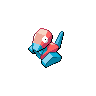

📖 英語版の図鑑説明
It has no discernible heartbeat and does not seem to draw breath, and yet it appears to function without issue. I cannot even begin to explain this utterly bizarre anomaly.
日本語訳
心臓の鼓動は確認できず、呼吸もしていないように見えるが、何の問題もなく機能しているようだ。この全く奇妙な現象を説明することは到底できない。
✨ ポリゴンの豆知識
アニメのポリゴンの回で起きた「ポケモンショック」のあと、ゲームの『赤・緑・青』も、はかいこうせんなどの技で画面がピカピカ点滅する演出が、ゆっくりになるよう直された。
出典 Bulbapedia
📝 この図鑑文に出てくる英単語
| 英単語 | 意味 | 品詞 | レベル |
|---|---|---|---|
| discernible | 見分けられる | 形容詞 | 大学 |
| heartbeat | 心臓の鼓動 | 名詞 | 高校 |
| breath | 息 | 名詞 | 中3 |
| function | 働き | 名詞 | 高校 |
| issue | 問題 | 名詞 | 高校 |
| utterly | まったく | 副詞 | 大学 |
| bizarre | 奇妙な | 形容詞 | 大学 |
| anomaly | 異常なもの | 名詞 | 大学 |
文法ポイント seem to draw は「seem/appear to + 動詞」で「〜するように見える、〜らしい」という意味です。
📊 ポリゴンの種族値
HP65
こうげき60
ぼうぎょ70
とくこう85
とくぼう75
すばやさ40
合計 395
❓ よくある質問
- ポリゴンの英語名は？
- ポリゴンの英語名は「Porygon」です。
- ポリゴンは英語版の図鑑でどう説明されている？
- 「It has no discernible heartbeat and does not seem to draw breath, and yet it appears to function without issue. I cannot even begin to explain this utterly bizarre anomaly.」と書かれています。日本語にすると「心臓の鼓動は確認できず、呼吸もしていないように見えるが、何の問題もなく機能しているようだ。この全く奇妙な現象を説明することは到底できない。」という意味です。
ポリゴンは第1世代（カントー地方）のポケモンです。第1世代（カントー地方）の英語名一覧 →